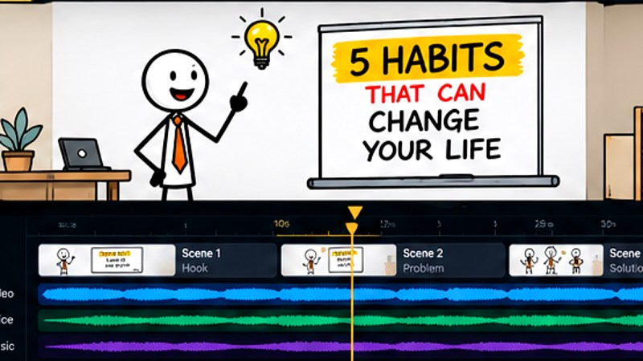

✦
KMotion Studio — AI Video & Animation
Motion recipes for documentaries and explainer videos
Asset BrowserInput and scope
01
Slow zoomSelect and configure
02
ParallaxPreview and verify before using
03
OrbitSaved in local project
04
RevealEditable • project scoped
05
Shake offInspect settings and references
Motion recipes for documentaries and explainer videos
Animation PresetsPreview / review
Searchable Visual Gallery & VersionsIllustrative assets

Variation 01
Opening Hook · Concept

Variation 02
Research Visual · Concept

Variation 03
Main Character · Concept

Variation 04
Detailed Shot · Concept

Variation 05
Key Example · Concept

Variation 06
Closing Scene · Concept
Inspector & Advanced ControlsPresets ▾
Model provider⌄
Motion type⌄
Duration5 sec
Motion strength30%
Smooth easing
Subject lock
Output ratio⌄
ⓘ UI review only. Actual engine availability, voice catalog, quotas and generation settings must be verified during implementation. No feature is running.
Recent Assets · References & HistoryFilters • Versions • Selected output
Asset 01 · 16:9Asset 02 · 16:9Asset 03 · 16:9
Asset 04 · 16:9Asset 05 · 16:9Asset 06 · 16:9